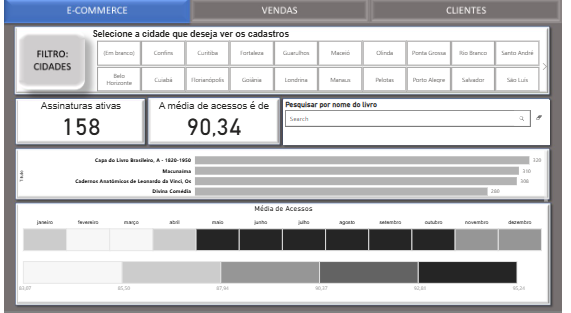
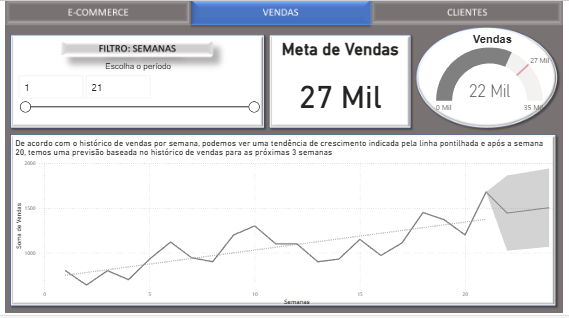
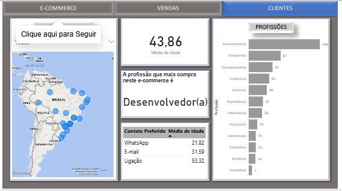
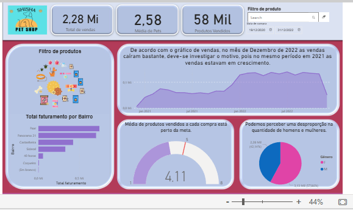

Business Intelligence & Data Analytics • Backend em formação
Transformo dados em decisões estratégicas e estou evoluindo para construir soluções de backend e automações que conectam dados, APIs e processos.
Ver ProjetosDashboards Desenvolvidos
Bases Modeladas
Relatórios Automatizados
Storytelling com dados, métricas acionáveis e foco em decisão.
Modelagem dimensional, qualidade de dados e consultas SQL otimizadas.
Relatórios automatizados, padronização e redução de retrabalho.
Olá! Sou Herben Oliveira. Atuo com Business Intelligence e Data Analytics, com formação em Matemática e pós-graduação em Análise e Desenvolvimento de Sistemas.
Tenho experiência em consultas SQL, modelagem de dados, desenvolvimento e manutenção de dashboards e análise de performance comercial, com atuação no setor de Alimentos & Bebidas e Hotelaria.
Hoje meu foco é BI, mas estou em transição para também atuar em backend e automações, conectando dados, APIs e rotinas para gerar ainda mais valor para o negócio.
Modelagem estrela, query em SQL utilizando PostgreSQL, DAX avançado e análise de performance por ponto de venda no setor de A&B.
Power BI • DAX • SQL • HTML • Data Modeling • Fluxo de dados

Contexto: Necessidade de acompanhar faturamento, média de acessos e desempenho por categoria.
Solução: Modelagem em esquema estrela com KPIs estratégicos e segmentação por período e produto.
Impacto: Melhor visibilidade de produtos mais rentáveis e apoio à decisão comercial.
Power BI • DAX • Power Query • Modelagem Dimensional



Contexto: Monitoramento de vendas, serviços e produtos mais rentáveis.
Solução: Dashboard com análise por categoria, período e tipo de serviço.
Impacto: Identificação de produtos com maior margem e sazonalidade de serviços.
Power BI • DAX • Power Query • Modelagem de Dados
Aberto a oportunidades, projetos freelance e colaborações em Business Intelligence e Data Analytics.
Você pode falar comigo diretamente pelo e-mail herbenoliveira10@gmail.com ou pelas redes abaixo.